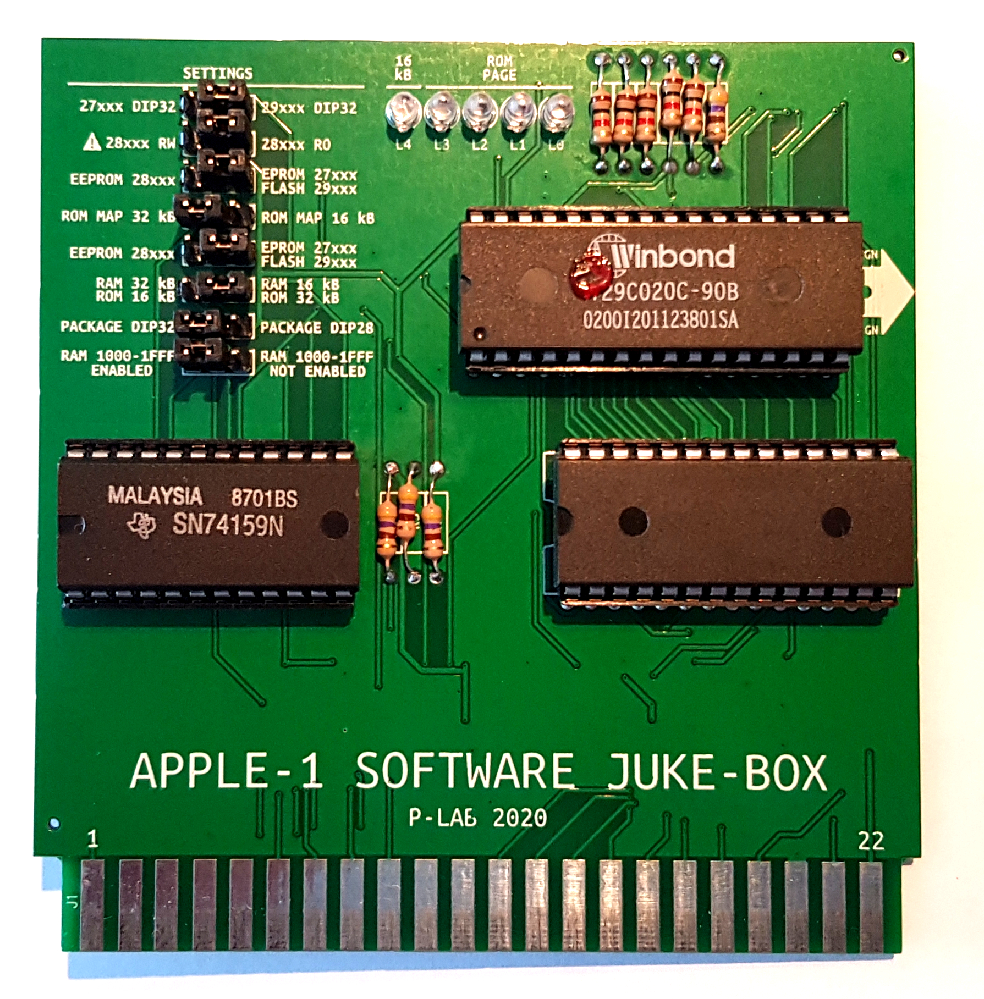

APPLE-1 SOFTWARE JUKE-BOX
THIS PRODUCT HAS BEEN DISCONTINUED
AND REPLACED BY: microSD STORAGE CARD

Documents hosted here:
PROJECT DOCUMENTATION
Documentation Changelog
User's manual
ITA
|
ENG
User's manual for EEPROM RW
ITA
|
ENG
Improvement/modification for 4 Mb FLASH memories
ITA+ENG
RAM Substitution
ITA
|
ENG
SCRIPT & INSTRUCTIONS
EPROM Creator Linux Script Pack [zip]
EPROM Creator Script instructions
ITA
|
ENG
External links:
Official Video [YouTube]
RAM Substitution Video [YouTube]

P-Lab 2020-24